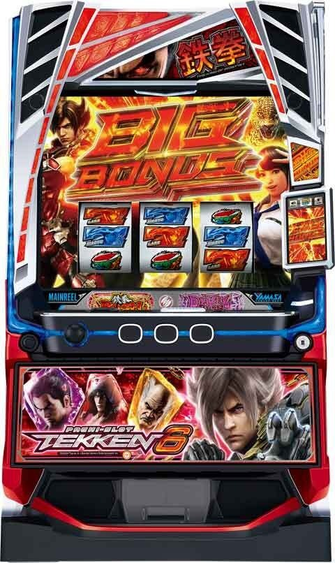
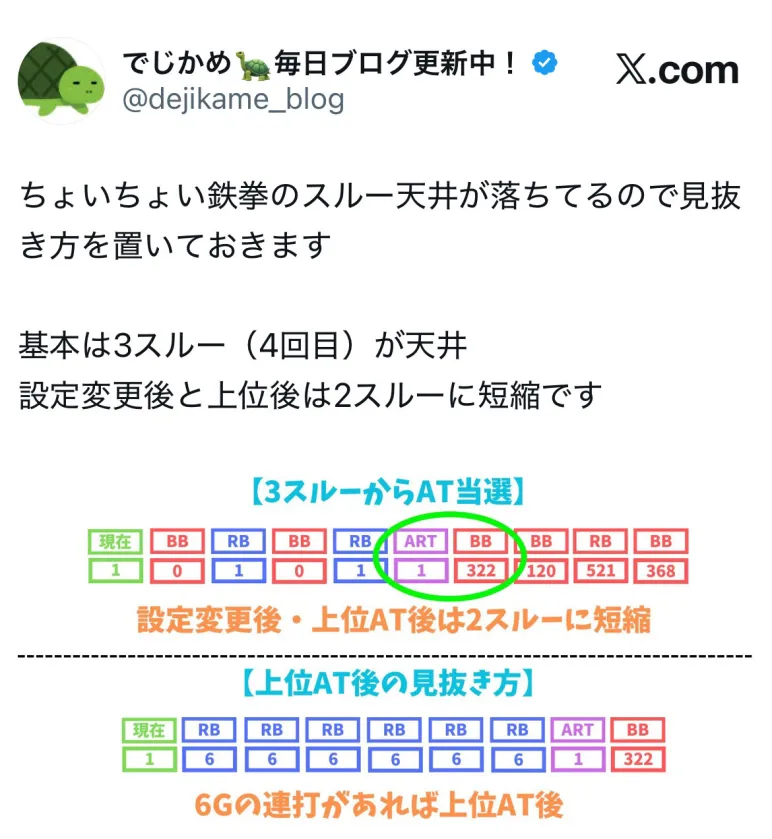
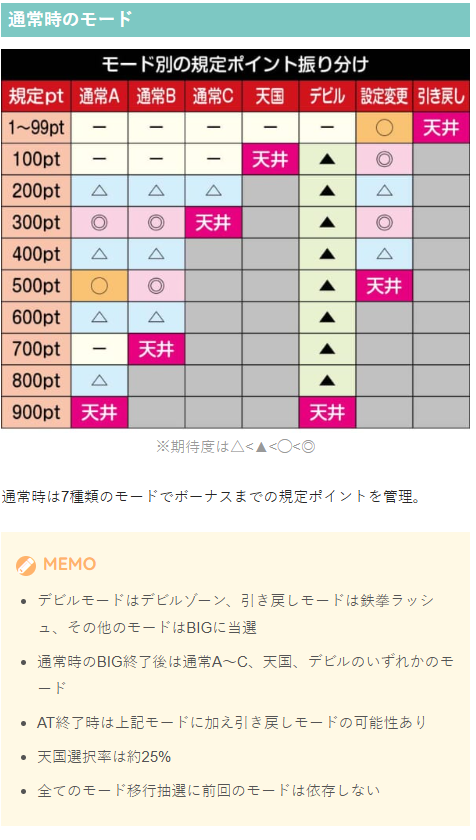
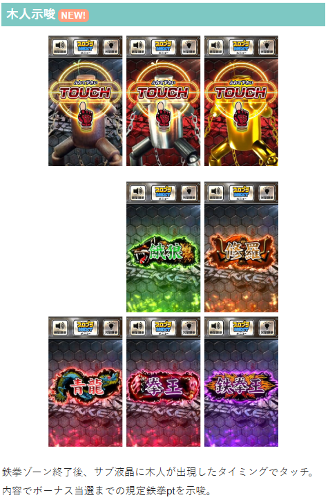
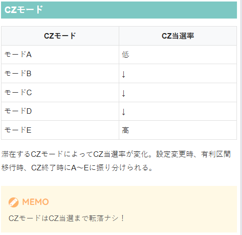
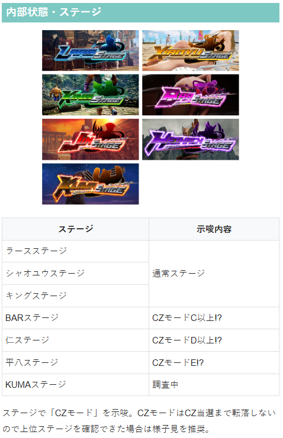
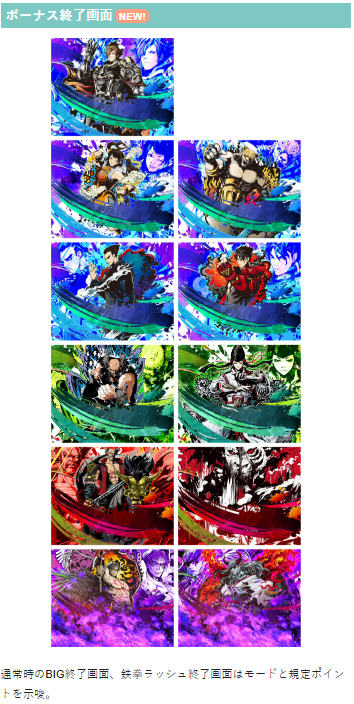

鉄拳6

| 項目 | 内容 |
|---|---|
| 天井G数 | 900pt＋α (平均747G＋α) |
| 恩恵 | ボーナス当選 |
| 天井詳細 | 通常時のBB/AT終了後最大900pt＋αで当選。 設定変更時は500pt＋αに短縮。 |
| スルー天井 | ボーナス3回連続AT非当選 |
| 恩恵 | 次回ボーナスでAT濃厚（赤7揃い） |
| 短縮条件 | 設定変更後、デビルロード終了後、デビルラッシュ終了後は最大2回スルーに短縮 |
| リセット判別 | 不明 |
| 有利区間切断条件 | デビルラッシュ突入で有利区間切断 |
狙い目
リセット狙い
| 条件 | 狙い目 |
|---|---|
| 0スルー | 180pt～（目安150G） |
| 1スルー | 積極派0pt～ 慎重派190pt～（目安150G） |
| 2スルー | 0pt～ |
ゲーム数、スルー天井狙い
下位AT後
| 条件 | 狙い目 |
|---|---|
| 0/1スルー | 700pt～（目安500-550G） |
| 2スルー | 200pt～（目安150G） |
| 3スルー | 0pt～ |
上位AT後
| 条件 | 狙い目 |
|---|---|
| 0スルー | 650pt～（目安500-550G） |
| 1スルー | 積極派0pt～ 慎重派200pt～（目安150G） |
| 2スルー | 0pt～ |
ゾーン狙い
| 条件 | 狙い目 |
|---|---|
| 100ptゾーン（天国） | 100pt～ゾーン抜けまで |
※公式から天国選択率25％。また、全てのモード移行抽選に前回のモードは依存しないと言われている。
示唆関連の押し引きについて
| 示唆・条件 | 対応 |
|---|---|
| 木人示唆「鉄拳王（紫背景）」 | 規定ゲーム数近そうなので打った方が良さそう |
| 終了画面（赤・紫背景） | 強そう？現状は打った方が良さそう？ |
| 平八ステージ確認 | CZ当選まで？ |
| KUMAステージ | 不明だが打った方が良さそう？ |
※木人示唆、終了画面の示唆は現在解析が出ていない。
有利区間関連狙い
| 条件 | 狙い目 |
|---|---|
| 差枚+1800枚以上 | 99pt+αの引き戻し+100ptゾーン消化まで |
やめ時
| 条件 | 対応 |
|---|---|
| CZ後 | 続行する様な示唆や状況無ければやめ |
| ボーナス後 | 前兆を経由してAT当選する場合あり。 10-20Gくらい様子見した方が良いかも？ |
| AT後 | 基本1G回してやめ。 ※上位後でも引き戻しが強いわけではない。 ※「示唆関連の押し引きについて」「有利区間関連狙い」に該当する場合は続行。 |
| CZモード | CZ当選まで転落しない。 高モードでCZ非当選のままボーナスやAT当選時はCZフォロー。 （有利切断してそうな場合は除く。現状有利切断条件は不明） |
その他
履歴から上位AT、スルー回数の確認方法

通常時のモード

木人示唆

CZモード


ボーナス終了画面

参考元
かめとうさぎのパチスロブログ
基本情報
- メーカー: 山佐
- 機械割: 97.9% 〜 114.9%
- 導入開始日: 2026年01月05日（月）
- ゲーム性概要: ●鉄拳シリーズの最新作がスマスロで登場 ●通常時はレア役や規定ポイントを契機にCZやボーナスを目指すゲーム性 ●初当りボーナス中は全役でATを抽選 ●AT「鉄拳ラッシュ」はゲーム数上乗せタイプ ●AT中は2G間の自力CZ「拳奪バトル」を搭載 ●AT中のボーナス終了後はゲーム数上乗せor鉄拳チャンス！ ●上位AT「デビルラッシュ」は期待値は約3,500枚！ ※上位ATの期待値は初当りからの流れを含めた合算


打ち方
打ち方・小役
打ち方（小役狙い）
［最初に狙う絵柄］ 左リールの上段付近にBARを目押し。スイカ停止時のみ中リールの目押しが必要で、それ以外の停止形は中＆右リールフリー打ちでOKだ。
［スイカ停止時］ 中リールはBAR目安でスイカをフォロー、右リールは取りこぼしがないのでフリー打ちで消化しよう。
［BARを狙え］ おもにレア役高確中に発生するレア役示唆で、発生時は全リールにBARを目押し。 発生時はスイカorチャンス目or強チェリーの期待大だ。すべてリプレイフラグなので、目押しに失敗しても取りこぼしはない。
［レア役の停止例］ 基本的にスイカは斜めに揃うが、BARを狙え発生時は上段に揃う。
変則押しはNG
押し順ナビ非発生時は左1stでの消化を推奨だ。
解析情報通常時
小役関連
レア役確率
| 役 | 通常（非ブースト） | 鉄拳ブースト中 |
|---|---|---|
| 弱チェリー | 1/59.6 | 1/59.6 |
| 強チェリー | 1/455.1 | 1/51.7 |
| スイカ | 1/99.3 | 1/13.1 |
| チャンス目 | 1/315.1 | 1/28.6 |
| ブースト目 | 1/819.2 | 1/819.2 |
| 合算 | 1/29.9 | 1/6.8 |
ブースト目はチャンス目と同等の抽選がおこなわれる。
リバースロック
おなじみのリバースロック（リールロック）は今回も健在。2段階目発展でボーナス期待度50%超、3段階目はロングフリーズ濃厚になる。
リバースロックの性能
| 段階 | 通常時 | AT中 |
|---|---|---|
| 1段階目 | 鉄拳ポイント獲得or CZ濃厚 | ゲーム数上乗せ濃厚 |
| 2段階目 | ボーナス期待度約50%、 強チェリー以外なら激アツ | 鉄拳コンボ濃厚 |
| 3段階目 | ロングフリーズ濃厚 | ロングフリーズ濃厚 |
リバースロックの注目ポイント
デビルゾーンの連続演出中は リバースロック1段階及び2段階の発生抽選をしない
デビルゾーンの連続演出中にリバースロックすればロングフリーズ濃厚
AT中にリバースロック1段階で スベらないチャンス目が停止すれば鉄拳コンボ濃厚
AT中のリールロック1段階→スベらないチャンス目（左リールBAR狙い時に左下段BAR停止からのチャンス目）は鉄拳コンボ濃厚。 そのため、リールロック1段階で左リール下段にBARが停止した時点でブースト目or鉄拳コンボ濃厚になる。
モード
通常モード
通常モードの特徴
設定変更時は必ず設定変更モードへ移行
通常時のビッグ（AT非当選）当選後は 引き戻し・設定変更を除くいずれかのモードへ移行
通常時のビッグ（AT非当選）当選後の天国モード移行率は約25%
AT終了後は設定変更を除くいずれかのモードへ移行
モード移行は前回滞在していたモードに依存しない
デビルモード滞在時の初当りはデビルモード移行濃厚
引き戻しモードは99pt以内のAT引き戻し濃厚
設定に応じてモード移行＆規定鉄拳ポイント抽選
高設定ほど200・400ptの当選率が優遇
モードによって規定鉄拳ポイントの振り分けが変化する。
通常モードごとの規定鉄拳ポイント分布
| ポイント | 通常A | 通常B | 通常C | 天国 | ||
|---|---|---|---|---|---|---|
| 1～99pt | 一 | 一 | 一 | 一 | ||
| 100pt | 一 | 一 | 一 | 天井 | ||
| 200pt | △ | △ | △ | 一 | ||
| 300pt | ◎ | ◎ | 天井 | 一 | ||
| 400pt | △ | △ | 一 | 一 | ||
| 500pt | ◯ | ◎ | 一 | 一 | ||
| 600pt | △ | △ | 一 | 一 | ||
| 700pt | 一 | 天井 | 一 | 一 | ||
| 800pt | △ | 一 | 一 | 一 | ||
| 900pt | 天井 | 一 | 一 | 一 | ||
| ポイント | デビル | 設定変更 | 引き戻し | |||
| 1～99pt | 一 | ◯ | 天井 | |||
| 100pt | ▲ | ◎ | 一 | |||
| 200pt | ▲ | △ | 一 | |||
| 300pt | ▲ | ◎ | 一 | |||
| 400pt | ▲ | △ | 一 | |||
| 500pt | ▲ | 天井 | 一 | |||
| 600pt | ▲ | 一 | 一 | |||
| 700pt | ▲ | 一 | 一 | |||
| 800pt | ▲ | 一 | 一 | |||
| 900pt | 天井 | 一 | 一 |
※序列は△＜▲＜◯＜◎
［設定変更＆引き戻しモードのゲーム数］ 基本的には引戻しモード&設定変更モードの規定ポイント煽りは40～49ptからスタート（リール右横に表示している鉄拳ポイントの色が変化）。 40～49pt以外で鉄拳ポイントの色が変化するとチャンス!? ただし、レア役などでポイントが加算された場合、どこで色が変化したかわからないこともあるので注意しよう。
CZモード概要
| モードの種類 | A＜B＜C＜D＜Eの順で CZ当選期待度アップ | |
|---|---|---|
| 初期モード抽選契機 | 設定変更後、有利区間移行時、 CZ当選時に再セット | |
| モード昇格契機 | 弱チェリー＝チャンス目＜スイカ | |
| ステージによる 示唆 | BAR | モードC以上濃厚 |
| ステージによる 示唆 | 仁 | モードD以上濃厚 |
| ステージによる 示唆 | 平八 | モードE濃厚 |
CZ当選期待度を管理する5種類のモードで、CZに当選するまで転落なし。CZ終了時に初期モードを抽選して、弱チェリー・チャンス目・スイカでモード昇格を抽選する。 初期モード決定時に次回のCZ種別も抽選される。
［ボーナスやATではクリアされない！］ 有利区間を切った時を除き、CZを経由せずにボーナス・ATに当選した場合はCZモードがクリアされないため、強めの示唆が出ていた時はCZ当選まで打つことをオススメだ。
鉄拳ポイント
鉄拳ポイント概要
1G消化で1pt、レア役時は最大100ptまで貯めることが可能（画面右下に表示）。滞在モードに応じた規定ポイントに到達すればボーナスorデビルゾーンに当選する。 ボーナス当選（初当り時）の約60%が規定鉄拳ポイント経由になる（CZ経由が約29%、レア役時の直撃が約11%）。
1Gにつき1pt加算
レア役時は最大100pt加算
最大900ptでボーナスorデビルゾーン当選
ボーナス・AT終了後に規定ポイントを再セット
レア役でポイントを獲得した場合、おもに連続演出失敗時にポイントを加算。CZ失敗時に告知されることもある。 鉄拳ゾーン中のレア役で加算されていた場合は鉄拳ゾーン終了時に告知される。
レア役契機の鉄拳ポイント告知タイミング
連続演出失敗時 （基本パターン）
鉄拳ゾーン終了時 （おもに鉄拳ゾーン中にレア役を引いていた場合）
CZ失敗時 (レア役契機でCZ当選かつポイント加算当選時など)
レア役で獲得したポイントは上記のタイミングで告知（潜伏している分はすべて告知）。 レア役でポイントを獲得かつボーナスが当選していた場合、短い前兆ゲーム数が選ばれた時は、ポイントが告知されずにボーナスへ移行することもある。
色ごとの期待度
鉄拳ポイントの色で本前兆期待度を示唆。緑になればチャンス、赤なら期待度約90%だ。
鉄拳ポイント色別の本前兆期待度
| 色 | 期待度 |
|---|---|
| 青 | デフォルト |
| 緑 | 約60% |
| 赤 | 約90% |
鉄拳ブースト
鉄拳ブースト概要
すべての状態から移行する可能性のあるレア役高確率状態で、滞在中はBARを狙え演出が発生して、レア役確率が1/6.8にアップ。 確率がアップするのは強チェリー・スイカ・チャンス目の3種類だ。
鉄拳ブースト概要
| 当選契機 | 弱チェリーの一部・ブースト目 |
|---|---|
| 突入確率 | 1/440.6 |
| 継続ゲーム数 | 平均20G（10G以上濃厚） |
| 滞在中の恩恵 | レア役確率が1/6.8にアップ |
CZ中やボーナス中に鉄拳ブーストに当選した場合、CZやビッグボーナスブーストが終了した後も鉄拳ブースト状態になる。
鉄拳ブースト当選率
| 役 | 当選率 |
|---|---|
| 弱チェリー | 6.3% |
| ブースト目 | 100% |
鉄拳ブースト当選時は、見た目上前兆を経由して突入する場合もあるが、当選したゲームから内部的にスタートしているため「レア役高確率中」の帯が出現していない状態でも、BARを狙えが発生する（発生したゲームからレア役高確率の帯が表示）。
鉄拳ゾーン/クライマックスバトル
前兆ステージ概要
［鉄拳ゾーン］ 規定ポイント到達時やビッグ終了後に移行するおなじみの前兆ステージだ。
［クライマックスバトル］ ビッグ後などに突入する可能性がある高期待度の前兆ステージ。
前兆中の抽選
フェイク前兆・本前兆不問で消化中は通常時と同じ抽選がおこなわれる。 各種当選時は前兆の対象によって告知されるタイミングが変化する。
前兆中に当選した場合の告知タイミング
鉄拳ゾーン中や連続演出中は、鉄拳ゾーンまたは連続演出終了後の 次ゲームレバーON時でのポイントを含めて告知 ※連続演出でCZに当選した場合はCZ終了後に告知
AT本前兆中に規定ポイント到達やレア役時の直撃当選時は、 赤7ビッグ（鉄拳ラッシュ濃厚）として告知
AT本前兆中にCZが当選した場合は AT終了後にCZを告知(有利区間移行時を除く)
フェイク前兆中にCZに当選した場合は 鉄拳ゾーン中またはAT終了後にCZを告知
ボーナス本前兆中のレア役は、 鉄拳ラッシュ（赤7ビッグ昇格抽選）を抽選
鉄拳ゾーンのゲーム数
鉄拳ゾーン開始から連続演出発展までのゲーム数で本前兆期待度が変化する。
鉄拳ゾーン突入→連続演出発展までのゲーム数別期待度
| ゲーム数 | 期待度 |
|---|---|
| 13G | デフォルト |
| 14G | 約75% |
| 15G | 100% |
CZ
CZ確率 （ロックオンチャレンジ・一八チャレンジ合算）
そこまで大きな差はないが、高設定ほどCZに当選しやすい。
ロックオンチャレンジ
3種類のキャラによって対応役＆期待度が変化するCZ。 消化中はレア役確率が1/6.8にアップ、対応役を引くことができればボーナス濃厚となる。
ロックオンチャレンジ（CZ）概要
| 当選契機 | レア役時の抽選 |
|---|---|
| 継続ゲーム数 | 10G |
| 滞在中のレア役確率 | 1/6.8 |
| ボーナス期待度 | 約45～66% |
| 消化中の抽選 | 対応レア役や強チェリーを引けば成功濃厚、 最終ゲームはリプレイorレア役成立で成功濃厚 |
キャラごとの対応レア役＆期待度
| キャラ | 対応レア役 | 平均期待度 |
|---|---|---|
| シャオユウ | チェリー | 約45% |
| ラース | チャンス目 | 約50% |
| キング | スイカ | 約66% |
［シャオユウ］
［ラース］
［キング］
一八チャレンジ
10G以内にリプレイorレア役を引けばボーナス濃厚になる高期待度CZだ。
一八チャレンジ（CZ）概要
| 当選契機 | ロックオンチャレンジ当選時の一部で昇格 |
|---|---|
| 継続ゲーム数 | 10G |
| ボーナス期待度 | 約85% |
| 消化中の抽選 | 全役でボーナス抽選、 リプレイ・レア成立時はボーナス濃厚 |
CZ成功当選率（ボーナス当選率）
| 役 | シャオユウ | ラース | キング |
|---|---|---|---|
| 弱チェリー | 100% | 6.3% | 6.3% |
| スイカ | 10.2% | 10.2% | 100% |
| チャンス目 | 18.8% | 100% | 18.8% |
| 強チェリー | 100% | 100% | 100% |
各キャラの対応レア役を引けばボーナス濃厚。強チェリーは全キャラ共通でボーナス濃厚になる。
引き戻し状態
引き戻し状態概要
コンティニューゾーン失敗時や上位AT終了時に通常時へ戻っても99pt以内の引き戻しに当選している可能性あり。 99ptまではリール周辺のUIが赤く光って引き戻し状態であることを示唆してくれる。
引き戻し当選率
引き戻し当選率は高設定ほど優遇される。
ボーナス当選時の抽選
引き戻し状態中、CZ経由でボーナスに当選した場合はAT濃厚の赤7BIGになる。
直撃抽選
AT直撃確率
通常時は成立役不問でAT直撃を抽選する。
ボーナス直撃当選確率
レア役の種類と設定に応じてボーナスを抽選、各役の当選率は設定4以上が優遇。 全役共通で、当選時は前兆を経て告知される。
フリーズ
ロングフリーズ
基本的にリールロック3段階目から画面がプチュンして、笑い声とともにロングフリーズへ移行。AT中に発生した場合は残りゲーム数をすべて上位ATのゲーム数に変換してくれる。
ロングフリーズ性能
| 発生確率 | 1/65536.0 |
|---|---|
| 発生契機 | 通常時・AT中のリプレイ成立時の一部 |
| 恩恵 | 初回セット100G以上の上位AT＋継続ストック2個濃厚 |
ロングフリーズ動画
リールロック3段階目到達でロングフリーズが発生。上位ATのデビルラッシュへ直行する。
解析情報ボーナス時
初当りボーナス
初当りビッグボーナス概要
青7揃い・赤7揃いの2系統があり、後者ならAT濃厚。 基本パターンは青7揃いのビッグで、消化中は全役でATを抽選する。ビッグ中に7が揃った場合はボーナス終了後に即ATへ移行するが、その他の契機は終了後の前兆ステージ（鉄拳ゾーン＜クライマックスバトル）を経由して告知される。
初当り時のビッグボーナス概要
| 当選契機 | 規定鉄拳ポイント到達、CZ成功、直撃当選 |
|---|---|
| 純増 | 約2.5枚/G |
| 継続ゲーム数 | 30G |
| AT期待度 | 約37% |
| 消化中の抽選 | 全役でAT抽選、7揃いはAT濃厚 |
| 備考① | 終了後は前兆ステージ移行して結果を告知、 7揃い後は終了後にAT即突入 |
| 備考② | 青7ビッグが3連続した場合、 4回目のボーナスは赤7ビッグ濃厚 |
| 備考③ | 赤7ビッグはAT濃厚かつ、 一部でエピソードボーナスへ移行（AT100G） |
［3種類の告知パターン］ 今作でも3種類の告知タイプを任意に選択できる。
告知タイプ
| タイプ | 特徴 |
|---|---|
| ラース ［チャンス告知］ | 演出に成功すれば大チャンス |
| シャオユウ ［最終告知］ | SNS告知で期待度示唆、告白成功で大チャンス |
| キング ［完全告知］ | シャッターが閉まればAT濃厚 |
［青7ビッグがデフォルト］ 基本的に青7揃いのビッグがメインとなる。
［赤ビッグはAT濃厚！］
［ビッグ中の７を狙えカットイン］
背景の色にも注目だ。
エピソードボーナス
赤7揃い時の一部で移行する可能性があるボーナスで、終了後は初期ゲーム数100GのATへ突入する。
エピソードボーナス概要
| 当選契機 | 赤7ビッグの一部 |
|---|---|
| 純増 | 約2.5枚/G |
| 継続ゲーム数 | 30G |
| AT期待度 | 100GのAT濃厚 |
エピソードボーナス当選率
| 契機 | 当選率 |
|---|---|
| 初当りボーナス当選時 | 約2～13%（設定1～6） |
デビルゾーン概要
ボーナス当選時の一部で突入するフリーズ高確率状態で、フリーズ発生orラスト5Gのバトルに勝利すればデビルラッシュ（上位AT）に突入。失敗した場合でもATへ突入する。
デビルゾーン概要
| 当選契機 | ボーナス当選時の一部 |
|---|---|
| 純増 | 約2.5枚/G |
| 継続ゲーム数 | 30G＋バトル5G |
| 成功期待度 | 約35%（上位ATへ） |
| 消化中の抽選 | フリーズ発生orバトル勝利で上位ATへ |
| 備考 | 失敗してもATへ突入 |
突入時のバトル勝利当選率
| 契機 | 当選率 |
|---|---|
| デビルゾーン突入時 | 6.3% |
消化中のロングフリーズ当選率
| 役 | 当選率 |
|---|---|
| 弱チェリー | 約23％ |
| スイカ | 約23％ |
| チャンス目 | 約38％ |
| 強チェリー | 約56％ |
最終バトル中の勝利書き換え当選率
| 役 | 当選率 |
|---|---|
| 弱チェリー | 1.6％ |
| スイカ | 1.6％ |
| チャンス目 | 3.1％ |
| 強チェリー | 6.3％ |
まず突入時に最終バトルの勝利を抽選し、それ以降は消化中のレア役でロングフリーズを抽選。最終バトル中のレア役では勝利書き換えを抽選する。成功するのはレア役がメインとなる。
ビッグ中のAT当選率
【7揃い抽選】
7揃い確率
| 7の種類 | 確率 |
|---|---|
| 青7 | 1/334.5 |
| 赤7 | 1/2333.1 |
| 合算 | 1/292.6 |
揃った7の種類別恩恵
| 7の種類 | 恩恵 |
|---|---|
| 青7 | 初期50GのAT濃厚 |
| 赤7 | 初期100GのAT濃厚 |
ビッグ中の7揃い時は、ビッグ終了後の前兆を経由せずATに突入。 シャオユウ選択時は7を狙えが発生しないため、内部的に7揃いに当選していた場合は最終告知でATが告知される。
【レア役抽選】
レア役のAT当選率
| 役 | 当選率 |
|---|---|
| 弱チェリー | 10.2% |
| スイカ | 10.2% |
| チャンス目 | 35.2% |
| 強チェリー | 80.1% |
レア役契機のAT当選時はおもに前兆ステージを経由して告知。 レア役だけでなく全役で抽選していて、トータル期待度は約37%となる。
［AT当選後の抽選］ AT当選後は、AT当選前とは異なる抽選値でATのセットストックを抽選。 7揃いした場合は、AT開始時にストックしたATのゲーム数が加算された状態でスタートする。 7揃い以外でストックした時は、AT最終ゲームで告知される。
AT中ボーナス
AT中のビッグボーナス概要
AT中のビッグボーナスは純増が約5.0枚にアップ。消化中はエクストララウンドで獲得した拳球に応じて、ATゲーム数の上乗せを抽選する。赤7揃いのビッグはレア役高確率状態なので上乗せのハイチャンスだ。 終了後は約25%で鉄拳チャンスへ突入する。
AT中のビッグボーナス概要
| 当選契機 | 拳奪バトル勝利（エクストララウンド後） |
|---|---|
| 純増 | 約5.0枚/G |
| 継続ゲーム数 | 20G＋α |
| 消化中の抽選 | 拳球に応じてATゲーム数の上乗せ抽選 |
| 終了時 | 約25%で鉄拳チャンスへ、 約75%がATゲーム数上乗せ |
| 備考 | 終了画面で鉄拳チャンス期待度や設定を示唆 |
AT中のビッグボーナスの種類
| 種類 | 性能 |
|---|---|
| エクストラ | デフォルトの青7揃いビッグ |
| ブースト | レア役高確率になる赤7揃いビッグ |
| パーフェクト | すべての拳球獲得時に移行する レア役高確率の赤7揃いビッグ（平均＋300G） |
［ビッグボーナスエクストラ］
［ビッグボーナスブースト］
［ビッグボーナスパーフェクト］
［消化中の上乗せ抽選］ 拳球の数が多いほど大量ゲーム数上乗せに期待できる。
［終了後の鉄拳チャンスジャッジ］ ビッグ終了後は鉄拳チャンスorATゲーム数上乗せを告知。 終了時のレバーONで抽選するため、叩きどころ！
拳球ごとの上乗せ抽選値
| 拳球 | 抽選値 |
|---|---|
| 黄（乗） | 13枚ベル時の約50%で上乗せ |
| 青（狙） | 約1/100で7揃い |
| 紫（硬） | 約1/120でベルフリーズ発生 |
| 赤（昇） | 強チェリー時の約50%で鉄拳コンボ発生 |
昇球を持っている場合でも、ボーナス最終ゲームでは鉄拳コンボが発生せず、当該ゲームで上乗せゲーム数が告知される。
鉄拳ラッシュ（AT）
AT概要
ゲーム数上乗せ型のATで、ゲーム数直乗せや拳奪バトル（AT中CZ）を目指すのがメインのゲーム性。 3種類の告知パターンを任意に選択できるのもこれまで通りだ。
鉄拳ラッシュ（AT）概要
| 当選契機 | ボーナス当選時の一部、直撃当選 |
|---|---|
| 純増 | 約2.5枚/G |
| 継続ゲーム数 | 50G＋α |
| レア役時の抽選 | ゲーム数上乗せ、鉄拳アタック（7揃い時）、 拳奪バトル、拳奪バトル高確 |
| 規定ゲーム数抽選 | 拳奪バトル |
| 上乗せゲーム数 | 10～500G（鉄拳コンボ含む） |
レア役時の抽選まとめ
| 抽選 | 弱チェリー | スイカ | チャンス目 | 強チェリー | |
|---|---|---|---|---|---|
| ゲーム数上乗せ | ○ | △ | 濃厚 | 濃厚 | |
| 拳奪バトル高確 | ○ | ◎ | － | － | |
| 拳奪 バトル | 通常中 | △ | △ | ○ | ○ |
| 拳奪 バトル | 高確中 | ○ | ○ | ◎ | ◎ |
| 拳奪 バトル | 超高確中 | 濃厚 | 濃厚 | 濃厚 | 濃厚 |
ゲーム数消化時の抽選
30Gごとに拳奪バトル当選のチャンス
初回は最大90G＋αで拳奪バトル当選（30Gと60Gも優遇）
拳奪バトル2回目以降は240G＋αが天井
［告知タイプ］
告知タイプ
| タイプ | 特徴 |
|---|---|
| スタンダード （ラース） | ● ゲーム数上乗せ時は演出発生→BETでの告知がメイン ● ステージ（階層）で拳奪バトル高確を示唆 ● 上の階層へ行くほど拳奪バトルのチャンス |
| スクラッチ告知 （シャオユウ） | ● スクラッチ獲得でゲーム数上乗せ濃厚 ● 最終ゲームでスクラッチを削ってゲーム数を告知 ● オーラのパターンで拳奪バトル高確を示唆 ● 風船が大きくなるほど拳奪バトル発展のチャンス |
| シャッター告知 （キング） | ● シャッターが閉まればゲーム数上乗せ濃厚 ● ジェイシーとアーマーキング参戦で拳奪バトル濃厚 |
鉄拳コンボ
ゲーム数上乗せ時の一部で発生する上乗せ昇格フリーズ。発生した時点で＋50G以上濃厚、ステップアップするほど期待できる。 発展キャラによって上乗せゲーム数期待度が変化。スイカ契機で発生した場合はキャラ不問で＋100G以上濃厚になる。
［一八］
［クマ］
［平八］
鉄拳コンボのキャラ別上乗せ性能
| キャラ | 上乗せゲーム数 |
|---|---|
| 一八 | ＋50G以上 |
| クマ | ＋100G以上 |
| 平八 | ＋200G以上 |
鉄拳アタック概要
AT中（AT中ビッグ含む）の7揃いから突入する伝統の0G連。0G連発生ごとに10G以上を上乗せ、5回保障なので最低でも50Gを獲得できる。
鉄拳アタック性能
| 当選契機 | AT中（AT中のビッグ含む）の7揃い |
|---|---|
| 0G連性能 | 0G連するたびにATゲーム数上乗せ（継続率管理） |
| 0G連保障回数 | 5回 |
［赤オーラなら高継続］ オーラは通常が青、赤なら高継続率に期待できる。
オーラの色別性能
| オーラ | 継続期待度 | 平均上乗せ |
|---|---|---|
| 青 | ★★★ | 約100G |
| 赤 | ★★★★ | 約150G |
最低0G連5回の保障があるため、オーラの色による継続抽選は5回目以降からおこなわれる。
［チャンスパターン］ 0G連で揃う7の種類や演出パターンで上乗せゲーム数が変化。青7＋赤7揃いや赤7のダブル揃い、オール赤7揃いは液晶の7表示と複合するパターンだ。
0G連のMAX回数は13回で、13回到達時はフリーズが発生して100G以上が上乗せされる。
パターン別上乗せゲーム数
| パターン | 上乗せ |
|---|---|
| 青7揃い | ＋10G以上 |
| 赤7揃い | ＋20G以上 |
| 青7＋赤7揃い | ＋30G以上 |
| 赤7ダブル揃い | ＋50G以上 |
| オール赤7揃い | ＋100G以上 |
| 拳魂一撃 | ＋30G以上 |
| フリーズ | ＋100G以上 |
ゲーム数上乗せ当選率
| 役 | 当選率 |
|---|---|
| 弱チェリー | 27.3% |
| スイカ | 5.1% |
| チャンス目 | 100% |
| 強チェリー | 100% |
成立役ごとの最低上乗せゲーム数
| 役 | 上乗せゲーム数 |
|---|---|
| 弱チェリー | 10G以上 |
| スイカ | 30G以上 |
| チャンス目 | 10G以上 |
| 強チェリー | 20G以上 |
チャンス目と強チェリーはゲーム数上乗せ以上濃厚だ。
上乗せゲーム数振り分け
| 上乗せ | 弱チェリー | スイカ | チャンス目 | 強チェリー |
|---|---|---|---|---|
| ＋10G | 約89% | 一 | 約66％ | 一 |
| ＋20G | 約8％ | 一 | 約20％ | 約70％ |
| ＋30G | 約1.2% | 約87％ | 約8％ | 約20％ |
| ＋50G | 約0.8％ | 約11％ | 約4％ | 約8％ |
| ＋100G | 約0.4％ | 約1.2％ | 約0.8％ | 約2％ |
バトル発展ゲームなどの一部状況では裏乗せになり、AT最終ゲーム後に告知される。
拳奪バトル高確移行率
| 役 | 通常→高確へ | 通常→超高確へ | 高確→超高確へ |
|---|---|---|---|
| 弱チェリー | 33.2% | 0.4% | 3.5% |
| スイカ | 66.4% | 0.4% | 10.2% |
弱レア役で拳奪バトル高確への昇格を抽選する。
拳奪バトル当選率
| 役 | 通常中 | 高確中 | 超高確中 |
|---|---|---|---|
| 弱チェリー | 2.7% | 20.7% | 100% |
| スイカ | 5.5% | 25.4% | 100% |
| チャンス目 | 20.7% | 50.8% | 100% |
| ブースト目 | 20.7% | 50.8% | 100% |
| 強チェリー | 25.4% | 85.2% | 100% |
高確中は確役の拳奪バトル当選率が大幅にアップする。
デビルラッシュ高確率
獲得枚数が2000枚を超えた時のAT残りゲーム数を加味して移行を抽選。3000枚獲得時は残りゲーム数不問で必ず移行する。 2000枚超時の抽選は見た目上ではわからないが、3000枚超時は液晶下部に紫色のモヤが表示（上液晶参照）。 デビルラッシュ高確率中はレア役でデビルラッシュが抽選される。
デビルラッシュ高確率 性能
| 移行契機 | 2000枚超・3000枚獲得時 |
|---|---|
| 滞在中の抽選 | 成立役に応じて上位ATを抽選 |
| 小役の期待度 | 弱チェリー＝スイカ＜チャンス目＜強チェリー |
拳奪バトル（AT中CZ）
拳奪バトル概要
2G間の自力バトルで、勝利すればエクストララウンドを経由してボーナスに当選。 対戦相手によって勝利期待度やエクストララウンド中の拳球獲得期待度が変化する。
拳奪バトル概要
| 当選契機 | レア役時の抽選、規定ゲーム数消化時、 鉄拳チャンス中の抽選 |
|---|---|
| 継続ゲーム数 | 2G |
| 平均勝率 | 約45% |
| レア役時の抽選 | その他＜押し順ベル＜リプレイ＜レア役の順で 勝利を抽選（レア役は勝利濃厚） |
| 勝利後 | エクストララウンドを経由してボーナスへ |
［対戦相手］
対戦相手別の勝利期待度＆拳球獲得期待度
| キャラ | 勝利期待度 | 拳球獲得期待度 |
|---|---|---|
| 平八 | ★★ | ★★★★ |
| ナンシー | ★★ | ★★★ |
| ファーカムラム | ★★ ★ | ★★ ★ |
| クラウディオ | ★★★ | ★★ ★ |
| ニーナ | ★★★★ | ★★ |
| クマ | ★★★★★ | ★★ ★ |
| 金木人 | ★★★★★ | ★★★★ ★ |
※ ★ は半個分
エクストララウンド
拳奪バトル勝利後に移行する6G間の拳球獲得ゾーンで、拳球を獲得するほどボーナス中のゲーム数上乗せ性能を強化できる。 毎ゲーム性能の異なる拳球を抽選するため、最大で6種類の拳球を獲得可能。一気にすべての拳球を獲得できる白7停止フラグもある。
エクストララウンド概要
| 当選契機 | 拳奪バトル勝利後 |
|---|---|
| 継続ゲーム数 | 6G |
| レア役時の抽選 | その他＜押し順ベル＜リプレイ＜レア役の順で 拳球獲得を抽選（レア役は獲得濃厚） |
| 終了後 | ボーナスへ |
| 備考 | レア役時はボーナスのゲーム数上乗せも抽選 |
［拳球の種類］
拳球ごとの効果
| 獲得できるゲーム | 拳球 | 効果 |
|---|---|---|
| 1G目 | 黄（乗） | 13枚ベルの約50%で上乗せ （ベル上乗せ高確） |
| 2G目 | 青（狙） | 7を狙えの期待度アップ （鉄拳アタック高確） |
| 3G目 | 紫（硬） | ベルの一部で平八フリーズ発生 （平八フリーズ高確） |
| 4G目 | 緑（稀） | レア役成立で上乗せ濃厚 |
| 5G目 | 赤（昇） | 上乗せ時の鉄拳コンボ発生率アップ （鉄拳コンボ高確） |
| 6G目 | 桃（倍） | 上乗せゲーム数が2倍にアップ |
すべての拳球を獲得した場合、超高性能の「ビッグボーナスパーフェクト」に突入する。
［白7停止フラグ］
白7フラグ確率
| 役 | 確率 |
|---|---|
| 白7フラグ | 1/655.4 |
［拳球の効果は液晶でも確認可能］
キャラ別の出現割合＆勝率
| キャラ | 出現割合 | 勝率 |
|---|---|---|
| 平八 | 約20％ | 約28％ |
| ナンシー | 約20％ | 約28％ |
| ファーカムラム | 約20％ | 約34％ |
| クラウディオ | 約19％ | 約50％ |
| ニーナ | 約19％ | 約80％ |
| クマ | 約1％ | 100% |
| 金木人 | 0.4％ | 100% |
［開始時のキャラ別］勝利当選率
| キャラ | 当選率 |
|---|---|
| 平八 | 0.4％ |
| ナンシー | 0.4％ |
| ファーカムラム | 0.4％ |
| クラウディオ | 7.4％ |
| ニーナ | 27.3％ |
| クマ | 100% |
| 金木人 | 100% |
まずは当選時の対戦相手に応じて勝利を抽選。漏れた場合はバトル中の成立役で勝利書き換えを抽選する。
［バトル中の成立役別］勝利当選率
| キャラ | その他 | 押し順ベル | リプレイ | レア役 |
|---|---|---|---|---|
| 平八 | 0.4% | 10.2% | 25.0% | 100% |
| ナンシー | 0.4% | 10.2% | 25.0% | 100% |
| ファーカムラム | 0.4% | 12.5% | 50.0% | 100% |
| クラウディオ | 1.2% | 25.0% | 62.5% | 100% |
| ニーナ | 12.5% | 50.0% | 100% | 100% |
クラウディオ以上はリプレイと押し順ベルの期待度が大幅にアップ、ニーナはリプレイを引けば勝利濃厚。 バトル勝利時および勝利後のレア役で、エクストララウンドでの拳球獲得ストックを抽選しているため、強い役で勝つほど拳球ストックに期待できる＋引き損なしだ。
拳奪バトル中の拳球ストック当選率
| 役 | 当選率 |
|---|---|
| 弱チェリー | 6.3% |
| スイカ | 6.3% |
| チャンス目 | 37.5% |
| 強チェリー | 100% |
強チェリーで勝利した場合は必ず拳球ストックを獲得。 中押しで2連7が中下段に停止するフラグは1.2%、上中段に停止するフラグなら必ず拳球をストックできる（どちらも左1stだとハズレ目が停止）。
勝利時のEXレベル振り分け
| EXレベル | 平八 | ナンシー | ファーカムラム | |||
|---|---|---|---|---|---|---|
| レベル1 | 一 | 一 | 36.7% | |||
| レベル2 | 一 | 一 | 31.3% | |||
| レベル3 | 一 | 75.0% | 18.8% | |||
| レベル4 | 75.0% | 21.9% | 10.2% | |||
| レベル5 | 21.9% | 2.0% | 2.0% | |||
| レベル6 | 2.3% | 0.8% | 0.8% | |||
| レベル7 | 0.8% | 0.4% | 0.4% | |||
| EXレベル | クラウディオ | ニーナ | クマ | 金木人 | ||
| レベル1 | 50.0% | 75.0% | 39.1% | 一 | ||
| レベル2 | 29.7% | 15.6% | 34.4% | 一 | ||
| レベル3 | 12.5% | 6.3% | 17.2% | 一 | ||
| レベル4 | 6.3% | 1.6% | 7.8% | 一 | ||
| レベル5 | 0.8% | 0.8% | 0.8% | 一 | ||
| レベル6 | 0.4% | 0.4% | 0.4% | 75.0% | ||
| レベル7 | 0.4% | 0.4% | 0.4% | 25.0% |
勝利した対戦相手によって、内部的に7段階のレベルを決定。レベルに応じてリプレイ・レア役以外の拳球獲得期待度が変化する。
EXレベルごとの拳球獲得期待度
| EXレベル | 押し順ベル | リプレイ | レア役 | その他 |
|---|---|---|---|---|
| レベル1 | 1.2% | 100% | 100% | 0.4% |
| レベル2 | 12.5% | 100% | 100% | 0.8% |
| レベル3 | 25.0% | 100% | 100% | 1.2% |
| レベル4 | 50.0% | 100% | 100% | 1.6% |
| レベル5 | 56.3% | 100% | 100% | 12.5% |
| レベル6 | 80.1% | 100% | 100% | 25.0% |
| レベル7 | 100% | 100% | 100% | 100% |
ボーナスのゲーム数上乗せ当選率
| 役 | 当選率（＋5Gor10G） |
|---|---|
| 弱チェリー | 2.0% |
| スイカ | 3.1% |
| チャンス目 | 25.0% |
| 強チェリー | 100% |
レア役は拳球獲得だけでなく、ボーナスのゲーム数を5or10G上乗せする抽選もおこなわれる。 中押しで2連7が中下段に停止するフラグは0.8%、上中段に停止するフラグ停止するフラグなら必ず上乗せが発生する（どちらも左1stだとハズレ目が停止）。
鉄拳チャンス
鉄拳チャンス概要
AT中ボーナス後の一部で突入する15G間の拳奪バトル高確率ゾーン。 拳奪バトル勝利→ビッグ終了後は必ず鉄拳チャンスに再突入（15G再セット）するため、ビッグ連打に期待できる。 開始画面が赤タイトルなら拳奪バトル当選率が優遇される（上画像は通常の青タイトル）。
鉄拳チャンス性能
| 当選契機 | AT中のビッグ終了時の約25% |
|---|---|
| 継続ゲーム数 | 15G |
| 消化中の抽選 | リプレイで拳奪バトルのチャンス、 レア役は拳奪バトル濃厚 |
| 備考① | 最終ゲームのリプレイ・レア役は拳奪バトル濃厚 |
| 備考② | ビッグ当選で鉄拳チャンス再セット |
| 期待枚数 | 約1500枚 （鉄拳チャンス～AT終了までの期待値） |
［おなじみの演出］ 様々な専用演出が発生する。
鉄拳チャンス中の拳奪バトル当選率 最終ゲーム以外
| 役 | 青タイトル | 赤タイトル |
|---|---|---|
| 押し順ベル | 約5％ | 約20％ |
| リプレイ | 約50％ | 約70％ |
| レア役 | 100% | 100% |
最終ゲーム
| 役 | 青タイトル | 赤タイトル |
|---|---|---|
| 押し順ベル | 約6％ | 約30％ |
| リプレイ | 100% | 100% |
| レア役 | 100% | 100% |
※上記以外の役でも拳奪バトルを抽選
拳奪バトルの本前兆中は基本的にレア役でのみ拳奪バトルのストックが抽選される。
特殊抽選時の振り分け
| 対戦相手 | 振り分け |
|---|---|
| クマ | 93.8％ |
| 金木人 | 6.3％ |
最終ゲームで当選したバトルでは、 勝利濃厚かつ対戦相手がクマor金木人 （＝リプレイ以上を引けばボーナス濃厚）になる特殊抽選が発生。 また、最終ゲーム以外でも契機役に応じて上記の対戦相手がクマor金木人になる抽選がおこなわれる。 当選期待度は弱チェリー・スイカ・中押し中下段2連7停止＜チャンス目＜強チェリー・中押し・上中段2連7停止（濃厚）だ。 ちなみに、AT中の拳奪バトルでも上記のクマor金木人が選択される可能性がある。
［中押しからの1確目も面白い！］ 中リールに2連7を狙って、枠内に2連7が停止（上中段or中下段に停止）すれば拳奪バトル濃厚（順押しした場合はハズレ目が停止）。 上中段に止まった時はクマor金木人とのバトルになるためボーナス濃厚になる。
コンティニューゾーン
コンティニューゾーン概要
AT終了後に突入する3G間の引き戻しゾーンで、レア役を引けばATに復帰。 チャンス目や強チェリーを引いた場合は頭突きコンボチャンス発生に期待できる。
コンティニューゾーン性能
| 当選契機 | AT終了後 |
|---|---|
| 継続ゲーム数 | 3G |
| 消化中の抽選 | レア役を引けばAT復帰濃厚、 レア役の一部で頭突きチャンスへ移行 |
頭突きコンボチャンス
コンティニューゾーンでレア役を引いた時の一部で突入する上乗せ特化ゾーン。 頭突きが成功するたびにATゲーム数を50G以上上乗せする。 レア役を引いた場合は継続（頭突き成功）濃厚だ。
引き戻し＆頭突きコンボチャンス当選率
レア役を引けば引き戻し濃厚。チャンス目や強チェリーで引き戻せば頭突きコンボチャンス当選のチャンスだ。
コンティニューゾーン中のAT当選率
| 役 | 当選率 |
|---|---|
| レア役 | 100% |
| その他 | 0.4％ |
AT当選契機役別・頭突きコンボチャンス当選率
| 役 | 当選率 |
|---|---|
| チャンス目 | 約20％ |
| 強チェリー | 約40％ |
| その他 | 約1％ |
中押しで中下段または上中段に2連7が停止するフラグが内部成立した場合、鉄拳ラッシュ濃厚になる。
デビルラッシュ（上位AT）
上位AT概要
まずは「デビルラッシュ覚醒」からスタートして、継続に漏れると「デビルラッシュ」に突入。デビルラッシュで勝利すればデビルラッシュ覚醒に戻るという、ダブルループシステムになっている。 デビルラッシュ覚醒中は成立役に応じて継続ストックを抽選する。
デビルラッシュ覚醒性能
| 当選契機 | ロングフリーズ後、デビルゾーン成功、 AT中のデビルラッシュ高確中のレア役の抽選、 デビルロード成功、デビルラッシュ勝利 |
|---|---|
| 純増 | 約5.0枚/G |
| 継続ゲーム数 | 30～300G/セット＋継続バトル5G |
| 継続率 | 約70or80or85or90% |
| 消化中の抽選 | レア役で継続ストック抽選 ［弱チェリー＜スイカ＜チャンス目＜強チェリー］ |
| 備考 | 継続バトル最終ゲームのレア役は勝利濃厚 |
| 終了後 | デビルラッシュ（非覚醒）へ移行 |
| 期待枚数 | 約3500枚（初当りからのトータル期待値） |
デビルラッシュ性能
| 当選契機 | デビルラッシュ覚醒終了後 |
|---|---|
| 純増 | 約5.0枚/G |
| 継続ゲーム数 | 30G＋継続バトル5G |
| 勝利期待度 | 50%以上（勝利でデビルラッシュ覚醒へ） |
| 消化中の抽選 | レア役で勝利ストック抽選 |
| 備考 | 継続バトル最終ゲームのレア役は勝利濃厚 |
継続率はデビルラッシュ覚醒開始時に決定。デビルラッシュ勝利から復帰した場合も継続率は再抽選される。
［デビルラッシュ覚醒］ 上位ATのメインパート的な存在。ここでのループが重要になる。
［デビルラッシュ覚醒の継続バトル］ バトル勝利で継続濃厚だ。
［デビルラッシュ］
［デビルラッシュの継続バトル］ ここで継続できなかった場合は終了。引き戻し状態へ移行する。
初期ゲーム数抽選
デビルラッシュ覚醒の初期ゲーム数は30Gがデフォルトだが、セット数に応じてゲーム数の昇格を抽選。3の倍数セットは昇格率がアップしているので50G以上が選択されやすい。
初期ゲーム数昇格率（50G以上への昇格）
| 状況 | 昇格率 |
|---|---|
| 3の倍数セット以外 | 10.2％ |
| 3の倍数セット | 18.8％ |
昇格時の初期ゲーム数振り分け
| 初期ゲーム数 | 振り分け |
|---|---|
| 50G | 49.2% |
| 100G | 45.7% |
| 200G | 3.5% |
| 300G | 1.6% |
勝利ストック抽選
上位AT中（デビルラッシュ覚醒・デビルラッシュで共通）はレア役で勝利ストックを抽選。 ラストのデビルクライマックスバトル中はストック当選率が大幅にアップする。
［上位AT中］勝利ストック当選率 ※クライマックスバトル中以外
| 役 | 当選率 |
|---|---|
| 弱チェリー | 約1% |
| スイカ | 約2% |
| チャンス目 | 約25% |
| 強チェリー | 約50% |
デビルロード中も上表と同じ数値でストックを抽選する。
［デビルクライマックスバトル中］勝利ストック当選率
| 役 | 当選率 |
|---|---|
| 弱チェリー | 12.5% |
| スイカ | 12.5% |
| チャンス目 | 100% |
| 強チェリー | 100% |
デビルクライマックスバトル中の強レア役はストック濃厚。ストックの有無に関わらず上記数値で抽選される。
デビルロード（上位CZ）
デビルロード概要
エンディング終了後に移行する上位ATをかけたCZだ。
デビルロード（上位CZ）性能
| 当選契機 | エンディング後 |
|---|---|
| 継続ゲーム数 | 30G＋継続バトル5G |
| 勝利期待度 | 50%以上（勝利でデビルラッシュ覚醒へ） |
| 消化中の抽選 | レア役で勝利ストック抽選 |
勝利ストック抽選
上位CZは準備中とCZ消化中のレア役で勝利ストックを抽選。準備中の当選率が高いところがポイントだ。
［上位CZ中］勝利ストック当選率
上位CZ準備中はデビルクライマックスバトル中と、消化中は上位AT中と共通の抽選値だ。
エンディング
エンディング移行条件
［鉄拳ラッシュエンディング］
鉄拳ラッシュエンディング
| 発生条件 | AT中の規定獲得枚数到達時 |
|---|---|
| 終了条件 | 有利区間終了時 |
| 純増 | 約5.0枚/G |
［デビルラッシュエンディング］
デビルラッシュエンディング
| 発生条件 | 上位AT中の規定獲得枚数到達時 |
|---|---|
| 終了条件 | 有利区間終了時 |
| 純増 | 約5.0枚/G |
エピソード中のレア役は終了時のトロフィー出現率アップ抽選がおこなわれる。
その他
リバースロック
リバースロック（リールロック）はAT中も発生する。
リバースロックの性能
リバースロックの注目ポイント
デビルゾーンの連続演出中は リバースロック1段階及び2段階の発生抽選をしない
デビルゾーンの連続演出中にリバースロックすればロングフリーズ濃厚
AT中にリバースロック1段階で スベらないチャンス目が停止すれば鉄拳コンボ濃厚
演出情報
激熱ランプ
激熱ランプ点灯時の恩恵
液晶下部にある激熱ランプが点灯した場合は、状況に応じた強力な恩恵をゲットできる。
激熱ランプ点灯時の恩恵
| 点灯タイミング | 恩恵 |
|---|---|
| 通常時 | AT濃厚 |
| AT中 | 勝利濃厚の拳奪バトル（クマor金木人）or上位AT |
| 上位AT中 | 勝利ストック濃厚 |
通常時
ステージごとの示唆
| ステージ | 示唆 |
|---|---|
| ラース | デフォルト |
| シャオユウ | デフォルト |
| キング | デフォルト |
| BAR | CZモードC以上濃厚 |
| 仁 | CZモードD以上濃厚 |
| 平八 | CZモードE濃厚 |
| クマ | AT本前兆濃厚 |
［ラースステージ］
［シャオユウステージ］
［キングステージ］
［BARステージ］
［仁ステージ］
［平八ステージ］
［クマステージ］
サブ液晶の木人タッチ示唆
鉄拳ゾーン終了の次ゲームは、サブ液晶に木人示唆が発生することがある。 サブ液晶をタッチすると、表示された文字でボーナス当選までの残り鉄拳ポイントが示唆される。
［木人の種類］
木人の種類別示唆
| 文字 | 示唆 |
|---|---|
| 通常の木人 | デフォルト |
| 銀木人 | 「修羅」以上が出現 |
| 金木人 | 「鉄拳王」出現濃厚 |
［表示文字の種類］
文字パターン別の規定までの残り鉄拳ポイント
| 文字 | 示唆 |
|---|---|
| 餓狼 | 規定ポイントまで400pt以内の示唆［弱］ |
| 修羅 | 規定ポイントまで400pt以内の示唆［強］ |
| 青龍 | 規定ポイントまで400pt以内濃厚 |
| 拳王 | 規定ポイントまで200pt以内濃厚 |
| 鉄拳王 | 規定ポイントまで200pt以内濃厚 ＋赤7ビッグor デビルゾーン濃厚 |
木人ゲーム解説の示唆
木人のゲーム数解説は文字色に注目。青文字以上なら滞在モードが示唆される。
木人ゲーム解説の文字色示唆
| 文字色 | 示唆 |
|---|---|
| 白 | デフォルト |
| 青 | 通常B以上濃厚（否定でデビルモード濃厚） |
| 緑 | 通常C以上濃厚（否定でデビルモード濃厚） |
| 赤 | 天国以上濃厚 |
設定変更モード中は獲得ポイントに応じて、上記表に相当する示唆がおこなわれる（緑文字なら300ptまでの当選濃厚、赤文字なら100pt+α以内の当選濃厚）。
［青文字］
［緑文字］
［赤文字］
アイキャッチ（ステージチェンジ）の示唆
ステージチェンジ発生時のアイキャッチでCZやクマステージ移行を示唆している。
アイキャッチの示唆
| アイキャッチ | 示唆 |
|---|---|
| ロゴのみ | デフォルト |
| 仁 | ロックオンチャレンジのキングor 一八チャレンジ濃厚 |
| 一八＆平八 | 一八チャレンジ濃厚 |
| ラース＆シャオユウ＆キング | クマステージ移行濃厚 |
［仁］
［一八＆平八］
［ラース＆シャオユウ＆キング］
鉄拳ボウル演出
画面左下のシャッターが開いて鉄拳ボウルが発生するとレア役を示唆。ボウリングの結果に応じてしさない異様が変化する。
結果ごとの示唆
| 結果 | 示唆 |
|---|---|
| ガター | CZ以上の本前兆に期待 |
| 2HIT | リプレイ対応、 リプレイ否定でCZ以上の本前兆に期待 |
| 5HIT | レア役対応（強レア役期待度：弱） |
| 8HIT | レア役対応（強レア役期待度：強） |
| COOL （ストライク） | レア役対応＋ビッグ本前兆濃厚 |
| GREAT （ストライク） | 強レア役対応、 強レア役否定でCZ以上の本前兆濃厚 |
| MARVELOUS （ストライク） | 強レア役対応＋AT本前兆濃厚 |
ミッション演出期待度
| ステージ | ミッション | CZ以上期待度 |
|---|---|---|
| ラース | マントを取り戻せ! | ★★ |
| ラース | アリサの暴走を止めろ! | 約80% |
| シャオユウ | ドキドキスイカ割り! | ★★ |
| シャオユウ | 押し合いプールバトル! | 約80% |
| キング | チャンピオンベルトを奪い返せ! | ★★ |
| キング | 古代遺跡から脱出しろ! | 約80% |
| バー | ガチンコ積み木崩し! | ★★★ |
| 仁 | 風間仁を救い出せ! | 一 |
| 平八 | 大岩を破壊しろ! | 一 |
ミッション演出期待度の法則
復活演出が発生した場合はボーナス以上濃厚
プレミアムパターン発生時はATor赤7ビッグ濃厚
期待度約80%のミッションハズレ時はCZモードC以上濃厚
全ミッション共通で、復活演出で成功した場合はボーナス濃厚、プレミアムパターン発生時はATor赤7ビッグ濃厚。 また、各ステージの期待度約80%のミッションは、ハズれた場合でもCZモードC以上濃厚となる。
バトル演出期待度
| ステージ | バトル | ボーナス以上期待度 |
|---|---|---|
| ラース、バー、 仁、平八 | ラースVSファーカムラム | 約40% |
| ラース、バー、 仁、平八 | ラースVSリロイ | 約70% |
| ラース、バー、 仁、平八 | ラースVSリディア | 約90% |
| ラース、バー、 仁、平八 | ラースVSクマ | 100% |
| シャオユウ | シャオユウVSファーカムラム | 約40% |
| シャオユウ | シャオユウVSリロイ | 約70% |
| シャオユウ | シャオユウVSリディア | 約90% |
| シャオユウ | シャオユウVSクマ | 100% |
| キング | キングVSファーカムラム | 約40% |
| キング | キングVSリロイ | 約70% |
| キング | キングVSリディア | 約90% |
| キング | キングVSクマ | 100% |
| 鉄拳ゾーン | 仁VS平八 | ★★☆ |
| 鉄拳ゾーン | 仁VSクラウディオ | ★★★ |
| 鉄拳ゾーン | 仁VSニーナ | 約85% |
| 鉄拳ゾーン | 仁VSクマ | 100% |
| 鉄拳ゾーン | 一八VS平八 | 100% |
| 鉄拳ゾーン | 一八VSクラウディオ | 約85% |
| 鉄拳ゾーン | 一八VSニーナ | 約90% |
| 鉄拳ゾーン | 一八VSクマ | 100% |
| クライマックスバトル | 約80% |
バトル演出は勝利すればボーナス以上濃厚。ステージごとに存在する組み合わせや、擬似連の有無によって期待度が変化する。
2・3G目の組み合わせ別期待度
| バトル | 敵→味方 | 味方→敵 |
|---|---|---|
| 仁VS平八 | デフォルト | 約40% |
| 仁VSクラウディオ | デフォルト | 約40% |
| 仁VSニーナ | 約80% | 約90% |
| 一八VSクラウディオ | 約80% | 約90% |
| 一八VSニーナ | 約85% | 約90% |
| バトル | 敵→敵 | 味方→味方 |
| 仁VS平八 | 約80% | 100% |
| 仁VSクラウディオ | 約85% | 100% |
| 仁VSニーナ | 約95% | 100% |
| 一八VSクラウディオ | 約95% | 100% |
| 一八VSニーナ | 約95% | 100% |
2・3G目の演出単体パターン別期待度
| バトル | 敵攻撃→ダウン | 敵攻撃→ガード | ||
|---|---|---|---|---|
| 仁VS平八 | デフォルト | 約80% | ||
| 仁VSクラウディオ | デフォルト | 約90% | ||
| 仁VSニーナ | 約80% | 約90% | ||
| 一八VSクラウディオ | 約80% | 約90% | ||
| 一八VSニーナ | 約85% | 約95% | ||
| バトル | 味方弱攻撃 →ガード | 味方弱攻撃 →ダウン | 味方強攻撃 →ダウン | |
| 仁VS平八 | デフォルト | 約60% | 約90% | |
| 仁VSクラウディオ | デフォルト | 約80% | 約90% | |
| 仁VSニーナ | 約80% | 約90% | 約90% | |
| 一八VSクラウディオ | 約80% | 約90% | 約90% | |
| 一八VSニーナ | 約85% | 約95% | 約95% |
［インターフェイス擬似連経由］
インターフェイス擬似連経由の期待度
| 連続回数（対戦相手） | 期待度 |
|---|---|
| 1回（VS平八） | 約60% |
| 2連（VSクラウディオ） | 約70% |
| 3連（VSニーナ） | 約85% |
| 4連 | 100% |
［ストーリー擬似連経由］ ストーリー擬似連は発生した時点で期待度80%超！
ストーリー擬似連経由の期待度
| 連続回数（バトル） | 期待度 |
|---|---|
| 1回（一八VS平八） | 100% |
| 2連（一八VSクラウディオ） | 約80% |
| 3連（一八VSニーナ） | 約90% |
| 4連 | 100% |
CZ
拳奪バトル中のオススメ打ち方手順
［中押し手順］ 拳奪バトル中は「2連7停止フラグ」が成立すれば拳球獲得濃厚になるのだが、順押しだとハズレとの判別ができない。 中押しをすることでこの「2連7停止フラグ」を判別することができる。
［順押し手順］ 左リールに2連の赤＆青7を狙って、中下段に2連が停止すればリプレイor強チェリー。 拳奪バトル中はチャンス、エクストララウンド中は拳球獲得濃厚だ。
ロックオンチャレンジの演出法則
【シャオユウ】
［シャオユウ］パターン別期待度
| 段階 | 期待度 |
|---|---|
| SU2（飛鳥） | 約20% |
| SU3（リリ） | 約60% |
| SU4（ジョシー） | 約90% |
| ジャッジ演出中の虹イルミ | 赤7ビッグ以上濃厚 |
［ステップ3］
［ステップ4］
［虹イルミ］
【ラース】
［ラース］パターン期待度
| パターン | 期待度 |
|---|---|
| アリサカットイン | 約20% |
| リーカットイン | 約90% |
［アリサカットイン］
［リーカットイン］
【キング】
［キング］パターン期待度
| パターン | 期待度 |
|---|---|
| 青イルミ | 約60% |
| 赤イルミ | 約90% |
| キングシャッター閉鎖 | 100% |
［青イルミ］
［赤イルミ］
【共通で軒ランプの先光りは成功濃厚】
軒ランプの発光法則
ジャッジ演出中に先光りすれば成功濃厚
強チェリーor対応役成立の次ゲームレバーON時の ジャッジ演出中に先光りすれば赤7ビッグ以上濃厚
AT中ボーナス関連
終了画面の鉄拳チャンス示唆
［状況によって示唆が変化!?］ AT中のビッグ終了画面は非鉄拳チャンス中なら鉄拳チャンス当選期待度を、鉄拳チャンス中なら設定示唆になる!?
AT中ビッグ終了画面の示唆（非鉄拳チャンス中）
| パターン | 示唆 |
|---|---|
| 青背景 | デフォルト |
| 緑背景：仁 | 鉄拳チャンス当選期待度：約50% |
| 赤背景：一八 | 鉄拳チャンス濃厚 |
| 赤背景：平八 | 鉄拳チャンス濃厚かつ赤タイトルの期待度アップ |
| 赤背景：一美 | 赤タイトルの鉄拳チャンス濃厚 |
［青背景］ 鉄拳ラッシュで選択している演出モードのキャラが登場する。
［緑背景］
［赤背景：一八］
［赤背景：平八］
［赤背景：一美］
7を狙え演出期待度
AT中と同じく7が揃えば鉄拳アタック濃厚。青（狙）球なし時は緑以上のカットインが発生した時点で7揃い濃厚だが、青（狙）球あり時のほうがカットイン発生率が圧倒的に高くなっている。
AT中・ボーナス中の7を狙え演出期待度
| カットイン | 青（狙）球なし | 青（狙）球あり |
|---|---|---|
| 青 | デフォルト | デフォルト |
| 緑 | 100% | 約50% |
| 赤 | 100% | 約95% |
| 虹 | 100% | 100% |
［緑］
［赤］
初当りボーナス関連
初当りビッグおよび鉄拳ラッシュ終了画面の示唆
| 画面 | 示唆 |
|---|---|
| ラース | ラース選択時のデフォルト （矛盾でAT本前兆or引き戻しモード濃厚） |
| シャオユウ | シャオユウ選択時のデフォルト （矛盾でAT本前兆or引き戻しモード濃厚） |
| キング | キング選択時のデフォルト （矛盾でAT本前兆or引き戻しモード濃厚） |
| 仁 | 規定鉄拳ポイント300pt以内期待度：約60% |
| 一八 | 規定鉄拳ポイント300pt以内期待度：約75% |
| 平八：緑 | 通常B以上濃厚 （否定でデビルモード濃厚） |
| 一美 | 通常C以上濃厚 （否定でデビルモード濃厚） |
| 平八：赤 | 天国以上濃厚 （否定でデビルモード濃厚） |
| 一八＆平八 | AT本前兆or引き戻しモード濃厚 |
| デビル仁 | 500pt以内のデビルゾーン当選濃厚 |
| デビル一美 | 100pt以内のデビルゾーン当選濃厚 |
初当りのビッグ終了画面や鉄拳ラッシュ終了時に滞在モードや規定鉄拳ポイントが示唆される。
［ラース］
［シャオユウ］
［キング］
［仁］
［一八］
［平八：緑］
［一美］
［平八：赤］
［一八＆平八］
［デビル仁］
［デビル一美］
青7ビッグ中の演出
【ラース選択時】
［ラース選択時］演出法則
鉄拳衆ナビ演出が3人ならCMB濃厚
一八VS平八オーバーラップ演出の金色の回想シーンは虹CMB濃厚
親子喧嘩を掴み取れ演出は発生した時点でCMB濃厚
親子喧嘩を掴み取れ演出で 「一八が平八を投げている」カットがあれば虹CMB濃厚
※CMB…クライマックスバトル
［鉄拳衆ナビ：3体］ 通常は2体だが、3体ならクライマックスバトル発展濃厚になる。
［平八オーバーラップ：金］ 青がデフォルト、金ならクライマックスバトル発展濃厚だ。
［親子喧嘩を掴み取れ：特殊画像］ 親子喧嘩を掴み取れは発生した時点でクライマックスバトル発展濃厚。上写真のように、一八が平八を投げている画像があれば勝利濃厚の虹クライマックバトルに発展する。
【シャオユウ選択時】 ［メッセージ演出］ メッセージ色でクライマックスバトル＆鉄拳ラッシュの期待度が示唆される（序列は白＜青＜緑＜赤＜虹） 。
［シャオユウ選択時］メッセージ演出の示唆
| メッセージ | 第1停止時 | 第3停止時 |
|---|---|---|
| 白 | デフォルト | 虹CMBorAT濃厚 |
| 青 | チャンス | 虹CMBorAT濃厚 |
| 緑 | 約55%でCMB以上 | 約75%でCMB以上 |
| 赤 | CMB以上濃厚 | CMB以上濃厚 |
| 虹 | 虹CMBorAT濃厚 | 虹CMBorAT濃厚 |
※CMB…クライマックスバトル
［シャオユウ選択時］メッセージ演出の法則
受信に失敗すると虹CMBorAT濃厚
メッセージのキャラがリリなら青以上、ジョシーは緑以上濃厚、 法則が崩れれば虹CMBorAT濃厚
レア役成立時は青以上濃厚、法則が崩れれば虹CMBorAT濃厚
※CMB…クライマックスバトル
●緑メッセージ
●受信失敗
［約束のあの場所で］
［シャオユウ選択時］約束のあの場所で連続演出の法則
赤タイトルやチャンスアップ発生でCMBの期待大
ケロット柄タイトルは虹CMBorAT濃厚
赤タイトルとチャンスアップ複合時は虹CMBorAT濃厚
※CMB…クライマックスバトル
●ケロット柄タイトル
●チャンスアップ
7を狙え演出期待度
7が揃えばAT濃厚。7が揃った後または虹クライマックスバトル告知後は、「7を狙え」が発生した時点で7揃い＝ATゲーム数上乗せ濃厚になる（カットインの色不問）。
初当りビッグ中の7を狙え演出期待度
| カットイン | 期待度 |
|---|---|
| 青 | デフォルト |
| 緑 | 約50% |
| 赤 | 約95% |
| 虹 | 100% |
［赤カットイン］
［キング選択時のカットイン］
AT関連
拳奪バトル高確・超高確示唆 ラース選択時の帯色
| 青帯 | 高確示唆 |
|---|---|
| 赤帯 | 超高確示唆 |
シャオユウ選択時のサブ液晶
| 青オーラ | 高確示唆 |
|---|---|
| 赤オーラ | 超高確示唆 |
※キング選択時は高確示唆なし
［ラース選択時］
［シャオユウ選択時］
［キング選択時］ キングに示唆はなく、拳奪バトル接近中の帯は拳奪バトルの本前兆を示唆。 高確の判別はできないが、高確率中の方がミッション演出が出やすい特徴があるため、たとえミッション演出がハズれても高確率中の可能性は高い。
コンティニューゾーン・頭突きコンボチャンス演出法則
［リール変則始動］
コンティニューゾーン中は右リール→中リール→左リールの順に始動すると引き戻し濃厚。 これは頭突きコンボチャンス中も有効で、上記の始動順だと当該ゲームでの上乗せ濃厚になる。
リール変則変動（右→中→左）時の恩恵
| 状況 | 恩恵 |
|---|---|
| コンティニューゾーン中 | AT引き戻し濃厚 |
| 頭突きコンボチャンス中 | 上乗せ（＝継続）濃厚 |
［演出発生タイミング］
演出発生パターン
| タイミング | 演出 |
|---|---|
| 1G目（カウント3→2） | 発生（非発生でAT濃厚） |
| 2G目（カウント2→1） | 発生（非発生でAT濃厚） |
| 3G目（カウント1→0） | 非発生（発生でAT濃厚） |
上乗せゲーム数の矛盾
レア役時の上乗せが＋5G、強チェリーで20G未満の上乗せ…のように、上乗せゲーム数の矛盾が発生した場合は鉄拳コンボ発生濃厚。次ゲームのレバーONから鉄拳コンボがスタートする。 ちなみに、鉄拳コンボ中の矛盾は特定回数以上のコンボ濃厚となる。
鉄拳コンボ中の矛盾パターン
一八コンボの1コンボ目で＋30Gが表示された場合は 2コンボ以上濃厚(+100G以上)
一八コンボの2コンボ目に＋200G以上が表示された場合は 3コンボ濃厚 （2コンボ目に表示されたゲーム数を超える上乗せ発生）
クマコンボの1コンボ目に＋200G以上が表示された場合は 2コンボ濃厚 （1コンボ目に表示されたゲーム数を超える上乗せが発生）
拳奪バトル中の演出法則
［1G目・味方キャラから登場］ 1G目は基本的に敵キャラから登場するが、ここで味方キャラが登場すればチャンスアップ。 キング選択時はキングから（味方キャラから）登場すれば勝利濃厚になる。
キング選択時は勝利濃厚！
［2G目・PUSH表示］ 2G目に表示されるPUSHボタンは、デカPUSHorケロット柄なら勝利濃厚かつ高EXレベル濃厚だ。
PUSHボタンごとの示唆
| ボタン | レア役以外 | レア役 |
|---|---|---|
| 通常PUSH | デフォルト | 勝利＋EXレベル4以上 |
| デカPUSH | 勝利濃厚 | 勝利＋EXレベル6以上 |
| ケロット柄 | 成立役不問で勝利＋EXレベル7 |
ケロット柄なら勝利プラスEXレベル7濃厚！
払い出しランプ虹点灯の示唆
通常は払い出し時に白点滅するが、虹点滅した場合は状態に応じた恩恵を獲得することができる。
払い出しランプ虹点灯時の恩恵
| 状況 | 恩恵 |
|---|---|
| デビルゾーン中 | 上位AT濃厚 |
| 拳奪バトル中（1G目） | 勝利濃厚 |
| AT中のビッグ中 | 平八フリーズ濃厚 |
鉄拳アタックの演出法則
［オーラの色］ 赤オーラなら高継続率に期待できる。
オーラの色
| パターン | 平均上乗せ |
|---|---|
| 青 | 約100G |
| 赤 | 約150G |
［文字パターン］
文字パターン
| パターン | 示唆 |
|---|---|
| 叩け！ | デフォルト |
| 拳魂一撃 | ＋30G以上 |
「拳魂一撃」なら＋30G以上濃厚になる。
［リール上の継続示唆］
リール上の継続示唆
| パターン | 示唆 |
|---|---|
| 青7中段揃い点滅 | 7揃い濃厚（保障中は＋20G以上） |
| 赤7中段揃い点滅 | 赤7揃い濃厚（＋20G以上） |
| 青7下・上・上点滅 | 赤7揃い濃厚（＋20G以上） |
| 赤7左下常駐 | 青7＋赤7揃い濃厚（＋30G以上） |
| 赤7左上・右下常駐 | 赤7ダブル揃い（＋50G以上） |
| オール赤7点滅 | オール赤7揃い濃厚（＋100G以上） |
※鉄拳アタック完走時の場合も各示唆が発生する可能性あり(上乗せ100G以上)
鉄拳チャンスの最終ゲーム
最終ゲームは基本的に鉄拳チャンスルーレット演出（上画像）が発生。 それ以外の演出が発生した場合は拳奪バトル濃厚!?
7を狙え演出期待度
7が揃えば鉄拳アタック濃厚。ラースorシャオユウ選択時の期待度はほぼ同じ、キング選択時は発生した時点で7揃い濃厚になる（レバーON時にキングシャッターが閉まる）。
AT中の7を狙え演出期待度
| カットイン | 期待度（ラースorシャオユウ選択時） |
|---|---|
| 青 | デフォルト |
| 緑 | 約50% |
| 赤 | 約95% |
| 虹 | 100% |
上位AT関連
ラウンド開始画面の示唆
| 画面 | 示唆 |
|---|---|
| デビル一八 | デフォルト |
| 平八 | 継続率80％以上期待度：約60% |
| デビル仁 | 継続率80%以上濃厚 |
| デビル一美 | 継続率90%以上濃厚 |
［デビル一八］
［平八］
［デビル仁］
［デビル一美］ デビル一美は最高継続率（90%）濃厚になる。
次回セットが50G以上濃厚になる勝ち方
| 勝ち方 | 次回の初期ゲーム数 |
|---|---|
| 1G目の赤セリフ＋5G目復活 | 50G以上濃厚 |
| 2G目のレバーON時にスペシャル音発生 | 50G以上濃厚 |
| 3G目の第2停止で一八反撃 | 50G以上濃厚 |
| 3G目にデカPUSH出現 | 50G以上濃厚 |
| 3G目にケロットPUSH出現 | 100G以上濃厚 |
| 4G目にドデカ金レバー出現 | 100G以上濃厚 |
| 5G目の第2停止で復活 | 50G以上濃厚 |
| 虹タイトル＋5G目復活 | 50G以上濃厚 |
| 虹タイトル＋1G目赤セリフ | 100G以上濃厚 |
| 虹タイトル＋1G目の赤セリフかつ5G目に復活 | 200G以上濃厚 |
バトル中の勝ち方には、次セットの初期ゲーム数が50G以上となるパターンが存在する。
セリフパターン別期待度
| 最初のセリフ | 次のセリフ | デビルロード デビルラッシュ | デビルラッシュ覚醒 |
|---|---|---|---|
| 平八［白］ | 一八［白］ | デフォルト | デフォルト |
| 平八［白or青］ | 一八［青］ | 約83% | 約95% |
| 平八［不問］ | 一八［赤］ | 約99% | 約99% |
| 一八［白］ | 平八［白］ | 約88% | 約95% |
| 一八［白or青］ | 平八［青］ | 約96% | 約96% |
| 一八［不問］ | 平八［赤］ | 約99% | 約99% |
1G目のセリフパターンと3G目の平八攻撃パターンに多彩なチャンスアップが存在する。 セリフは青で大チャンス、赤はほぼ勝利になる。
［平八の青＆赤文字］
［一八の青＆赤文字］
平八の攻撃パターン別期待度
| 平八の攻撃 | デビルロード デビルラッシュ | デビルラッシュ覚醒 |
|---|---|---|
| 強攻撃 | 約15% | 約45% |
| 中攻撃 | 約52％ | 約79% |
| 弱攻撃 | 約92% | 約98% |
［強攻撃］ 平八剛掌破は大ピンチ。 ちなみに、平八剛掌破は俗称ではなく、ゲーム鉄拳7の正式な技名称だ。
［中攻撃］ 頭突きが中攻撃になる。
［弱攻撃］ パンチなら大チャンスだ。
裏ボタン
7揃い先判別
レバーON時の7を狙え発生時に、もう一度レバーを叩いて筐体がバイブすれば7揃い濃厚になる。 初当りビッグ中ならAT濃厚、AT中やAT中のビッグ中は鉄拳アタック濃厚だ。
7揃い先判別手順（ビッグ中・AT中）
| 手順 | 7を狙え発生時に再度レバーを叩く |
|---|---|
| 効果 | 筐体がバイブすれば7揃い濃厚 |
拳奪バトルの勝利先判別
拳奪バトルの1G目にPUSHボタンを押して、液晶右側のビッグボーナス告知ランプが点滅すると勝利濃厚となる。
拳奪バトル勝利先判別手順
| 手順 | 開始1G目にPUSHボタンを押す |
|---|---|
| 効果 | ビッグボーナス告知ランプ点滅で勝利濃厚 |
リバースロック中の先告知
リバースロック発生時に、もう一度レバーを叩いて筐体がバイブすれば、通常時・デビルゾーン中はロングフリーズ濃厚、AT中は鉄拳コンボ以上濃厚になる。
リバースロック時の隠しレバーバイブ
| 手順 | ロック中に再度レバーを叩く | |
|---|---|---|
| 効果 | 筐体振動すれば成功 | |
| 成功時の恩恵 | 通常時 | ロングフリーズ濃厚 |
| 成功時の恩恵 | デビルゾーン中 | ロングフリーズ濃厚 |
| 成功時の恩恵 | AT中 | 鉄拳コンボorロングフリーズ濃厚 |
その他
7を狙えの1確・2確目
［逆押し時］
［逆ハサミ時］
［中押し時］ 中押し時は1リールでフェイク・赤7揃い・青7揃いを判別できる。